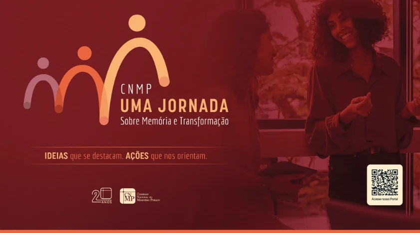
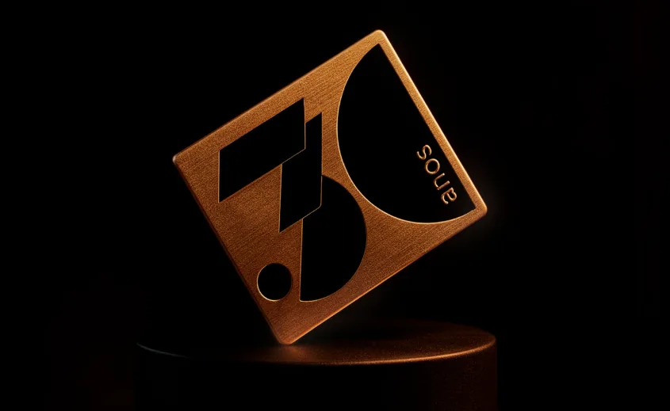
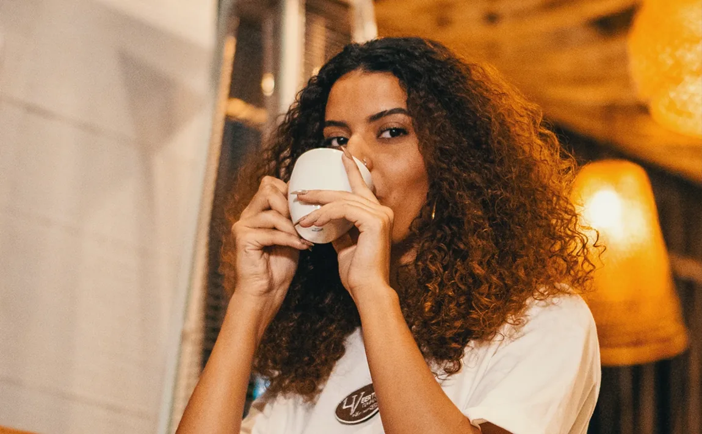
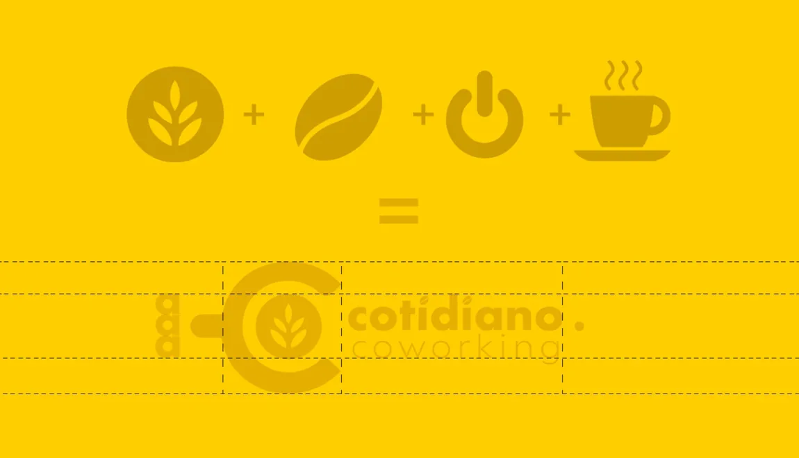

DESIGNER PLENO · DIREÇÃO DE ARTE
Ivan Reis
Design, direção de arte e comunicação visual para transformar ideias em soluções claras e relevantes.
Mais de 7 anos de experiência em órgãos públicos, agências, produtoras, canais de educação e marketplaces, com atuação em identidade visual, campanhas, motion e comunicação institucional.
Fale comigo
Sou Ivan, Designer Pleno com mais de 7 anos de experiência, com atuação em órgãos públicos, agências, produtoras, canais de educação e marketplaces. Ao longo da minha trajetória, desenvolvi soluções visuais para diferentes contextos e públicos, sempre buscando equilibrar clareza, consistência e resultado.
Tenho domínio do Pacote Adobe e experiência em vídeo e motion design, especialmente com After Effects e Premiere. Gosto de transformar demandas complexas em soluções visuais claras, trabalhar em diferentes formatos e colaborar com equipes para tirar boas ideias do papel.
Comunicação visual institucional, materiais para eventos das câmaras temáticas do CNMP, editoração e diagramação de publicações.
Consolidação da identidade visual da empresa, criação do selo de 30 anos e branding book completo.
Redesign do site institucional, peças para redes sociais e diagramação do Código de Ética.
Projetos selecionados
Clique em um projeto para conhecer suas peças e aplicações sem sair desta página.

Desenvolvimento de selo e identidade visual para comunicação institucional no Ministério Público, buscando unidade visual, reconhecimento e clareza em diferentes canais e formatos.

Criação do selo comemorativo de 30 anos e consolidação da identidade visual da empresa, transformando um logotipo isolado em um sistema visual mais consistente e aplicável a diferentes pontos de contato.

Coleção de marcas e logotipos desenvolvidos em diferentes propostas visuais.

Projeto de identidade visual Cotidiano, com apresentação das aplicações e sistema gráfico.